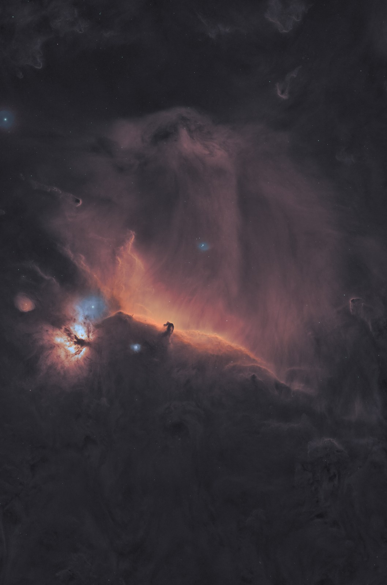

Image processing for smart telescopes and astro cameras
You've already caught the light. Let's develop it.
Send me the raw frames from your Seestar, Dwarf, Vespera, or your own telescope and astro camera, colour or mono with filters. I screen out the cloudy ones, stack the rest properly and process them into a finished picture you'll want on the wall.
Drag the line across each picture. The left side is the stacked frames with only a plain stretch, much as the telescope's app shows them; the right side is the same data after processing.
Plain stretchProcessed
The Pleiades, M45
A plain stretch of the stack shows the stars and a grey haze. Processing the same 58 minutes, from two nights, brings out the blue dust the cluster is drifting through.
Scope
Seestar S30 Pro
Data
58 × 60 s, IR-cut filter, 58 min
Nights
7 Oct, Brampton; 16 Oct, Acomb
Plain stretchProcessed
The Triangulum Galaxy, M33
A face-on spiral three million light years away. Sharpening and careful star handling let the arms and their knots of new stars stand out from the star field.
Heart and Soul, IC 1805 and IC 1848Seestar S30 Pro mosaic · 1,702 × 20 s, LP filter, 9.5 hThe Fighting Dragons of Ara, NGC 6188Hubble palette, SII · Hα · OIIIProcessed by Mark Stanners, original data from Telescope LiveThe Running Chicken, IC 2944Hubble palette, SII · Hα · OIIIProcessed by Mark Stanners, original data from Telescope LiveThe Dumbbell Nebula, M27Hubble palette, SII · Hα · OIIIProcessed by Mark Stanners, original data from Telescope LiveAndromeda, M31634 frames over three nights plus 2.8 h of Hα, Seestar S30 Pro
Telescope Live images are processed from my own subscription. Their licence doesn't allow subscribers to pass data on, so I can't process TL data for others.
Prints
Pictures for the wall
Prints from my own Seestar and Vespera data, captured across Tyneside, Northumberland and Cumbria, plus professional data from Telescope Live. Printed on fine-art paper.
Prices · unframed fine-art giclée
Heart and Soul, Seestar mosaic9.5 hCaptured and processed by Mark Stanners, SeestarA4 £30A3 £50A2 £90A1 on requestAndromeda, M318.6 hours of light, three nights, nearly 100 miles of driving to dark skies.Captured and processed by Mark Stanners, SeestarA4 £30A3 £50The Pleiades, M4558 min · 2 nightsCaptured and processed by Mark Stanners, SeestarA4 £25A3 £45Triangulum, M333.1 h · 1 nightCaptured and processed by Mark Stanners, SeestarA4 £25A3 £45Elephant's Trunk, IC 13963 h · 1 nightCaptured and processed by Mark Stanners, VesperaA4 £25A3 £45Garlic Nebula57 h 20 minProcessed by Mark Stanners, original data from Telescope LiveA4 £25A3 £45A2 £80A1 £150California Nebula, NGC 14993.9 h · 1 nightCaptured and processed by Mark Stanners, SeestarA4 £25A3 £45Horsehead, B33The classic view: the Horsehead on its glowing ridge with the Flame Nebula to the leftProcessed by Mark Stanners, original data from Telescope LiveA4 £25A3 £45A2 £80

Horsehead and Flame, full fieldThe whole region round the Horsehead: the Flame, the long glowing curtain of IC 434 and the dark clouds of OrionProcessed by Mark Stanners, original data from Telescope LiveA4 £25A3 £45A2 £80A1 £150Fighting Dragons of Ara, NGC 61887 h 40 min · in red and teal or gold and blueProcessed by Mark Stanners, original data from Telescope LiveA4 £25A3 £45A2 £80A1 £150Running Chicken, IC 29446 h 30 min · in red and teal or gold and blueProcessed by Mark Stanners, original data from Telescope LiveA4 £25A3 £45A2 £80A1 £150Dumbbell Nebula, M2714 h 15 minProcessed by Mark Stanners, original data from Telescope LiveA4 £25A3 £45A2 £80Butterfly Cluster, M712 hProcessed by Mark Stanners, original data from Telescope LiveA4 £25A3 £45A2 £80Eagle Nebula, M1623 h 04 minProcessed by Mark Stanners, original data from Telescope LiveA4 £25A3 £45Ring Nebula, M5712 h 50 minProcessed by Mark Stanners, original data from Telescope LiveA4 £25Heart and Soul, deep field with Sh2-20021 h 50 min · in red and teal or gold and blue · with the rare planetary nebula Sh2-200 in the top cornerProcessed by Mark Stanners, original data from Telescope LiveA4 £25A3 £45A2 £80A1 £150Heart and Soul, close crop (Telescope Live)21 h 50 min · in red and teal or gold and blueProcessed by Mark Stanners, original data from Telescope LiveA4 £25A3 £45A2 £80A1 on requestSoul Nebula, IC 184821 h 50 min · in red and teal or gold and blueProcessed by Mark Stanners, original data from Telescope LiveA4 £25A3 £45Andromeda, deep (Seestar + Telescope Live)Seestar data by Mark Stanners, combined with Telescope Live dataA4 £30A3 £50A2 £90
Prices include UK postage.
Free on request: a small legend in the corner with the object's name and a line about it, and a signature. Nice for a gift; say if you'd like your own wording or a name added.
Acrylic and metal
Most images can also be made as a face-mounted acrylic or an aluminium-mounted print: deep blacks, ready to hang, no frame needed. Priced on request; as a guide, from about £120 at A3 and £220 at A2.
At A3: Heart and Soul, Seestar mosaic; Andromeda, M31; The Pleiades, M45; Triangulum, M33; Elephant's Trunk, IC 1396; Garlic Nebula; California Nebula, NGC 1499; Horsehead, B33; Horsehead and Flame, full field; Fighting Dragons of Ara, NGC 6188; Running Chicken, IC 2944; Dumbbell Nebula, M27; Butterfly Cluster, M7; Eagle Nebula, M16; Heart and Soul, deep field with Sh2-200; Heart and Soul, close crop (Telescope Live); Soul Nebula, IC 1848; Andromeda, deep (Seestar + Telescope Live).
At A2: Heart and Soul, Seestar mosaic; Garlic Nebula; Horsehead, B33; Horsehead and Flame, full field; Fighting Dragons of Ara, NGC 6188; Running Chicken, IC 2944; Dumbbell Nebula, M27; Butterfly Cluster, M7; Heart and Soul, deep field with Sh2-200; Heart and Soul, close crop (Telescope Live); Andromeda, deep (Seestar + Telescope Live).
Buying a print. Tap a size to pay securely through Stripe by card, Apple Pay or Google Pay; your card details go to Stripe, never to me. There's a box at checkout for the optional legend wording. I print each one to order and email you when it's posted. UK delivery for now; for anywhere else, a size not listed, or acrylic and metal, email me.
How it works
Three steps, no software to buy
Send the frames
Pick the folder that holds your individual frames, the FITS files (.fit or .fits, often named Light_…), not the telescope's own stacked picture. You can pick a folder above it; only the frames are sent. If you have flats, darks or bias frames, include them; they go up with the lights. Not sure where your frames are kept? Check your telescope's or capture program's guide, or email me.
I process them
Every frame is checked for cloud, dew and trailing. The good ones are stacked in PixInsight, then cleaned up, colour-calibrated against star catalogues and finished by hand.
You get the picture
A full-size 16-bit TIFF for printing, a JPEG for sharing, and a short note on what the data showed and what would improve it next time.
Prices
One price per target
Smart telescope
£30
Seestar, Dwarf, Vespera and similar
One target, one night or several
Dedicated rig
£45
Your telescope and astro camera, colour or mono
Broadband colour or LRGB
Narrowband
£55
Hα, OIII, SII filters, mono or dual-band
Choice of palettes
Mosaic
from £75
Several panels joined and balanced
Quoted once I've seen the data
Every job includes: a check of every frame, a night report on your data and kit, a review page with several versions to choose from, your chosen version as a full-size 16-bit TIFF and a JPEG, the linear master files for your own processing, and one round of tweaks.
Extra versions: £5 each (another palette, starless, a different crop).
You're pulling some wonderful detail out of these data sets! Well done.
Alistair Bartlett, Bubble Nebula from an 8-inch Newtonian
You've definitely brought out more of the fainter features.
Dark Auditor, Rosette Nebula from a Seestar S50
For me the joy of this shot was the plethora of different things to look at in just one field of view.
Alistair Bartlett, Tadpoles and Flaming Star
Paying: nothing up front. You pick from your versions on the review page, then the delivery email brings the download link with a secure Stripe payment link for the agreed price (card, Apple Pay or Google Pay). See the terms for refunds and redos.
Questions
Before you send anything
Who owns the finished image?
You do. It's your data and your picture. I'll only show it here if you say yes.
Do you use AI tools?
Yes, and openly. Noise reduction, star removal and sharpening use specialist astronomy tools that run on trained models, alongside conventional PixInsight processing. These tools can occasionally make up detail, so every result is checked at full size against the plain stack, and anything that isn't in your frames comes out.
Which telescopes work?
Any setup that saves its individual frames as FITS files. Smart telescopes so far: the ZWO Seestar S30 and S50, DWARFLAB's Dwarf range including the new Draco, and the Vaonis Vespera (its files need a small correction before stacking, which I handle). Dedicated rigs work too: any telescope with a colour or mono astro camera, with the frames captured by ASIAIR, NINA or any other capture software. With a mono camera, send each filter's frames (Hα, OIII, SII, or L, R, G, B) and I'll combine them into colour. If yours is something else, send a few frames and I'll check them first.
Do I need calibration frames?
Smart telescopes handle this themselves, so just send the lights. With your own camera, flats matter most: they remove dust shadows and the darkening towards the corners. Darks and bias help too. Send whatever you have, and say if they came from a different night.
How much data should I send?
An hour is enough for bright targets. Faint nebulae and galaxies really reward three hours or more, and several nights of the same target can be combined.
What happens to my files afterwards?
You get a private download link for the finished picture. Seven days after you first download it, the link closes and your raw frames are deleted; if the link isn't opened, everything is cleared after 30 days. If you'd like your frames kept for adding more nights later, just say. I keep a copy of the finished picture and your name and email so I can send it again, and nothing is shared with anyone else.